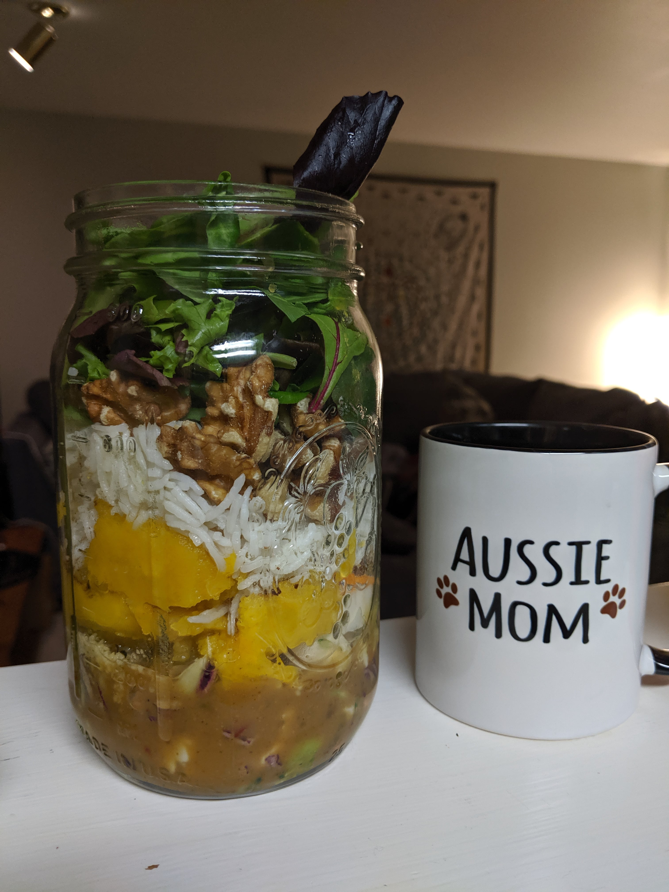
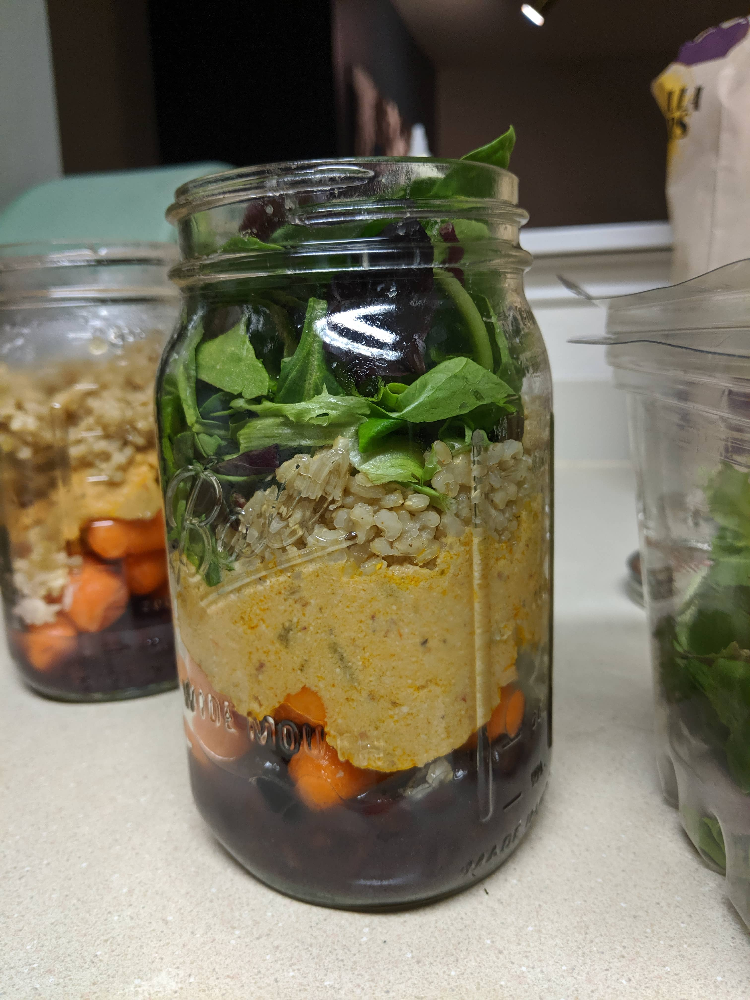

Sauteed Mushroom Cauliflower Rice with Kale and Hummus

Delicata squash, basmati rice, walnuts, mixed salad greens, and peanut sauce

Black beans and cheez sauce and basmati rice topped with greens in mason jars

Arugula and microgreens salad topped with guacamole,fresh mushrooms, and red cabbage

Gourmet mushroom soup with potatoes and mixed greens and lentils

Steamed potatoes with garlic sauce and cauliflower tabbouli topped on top of fresh spinach